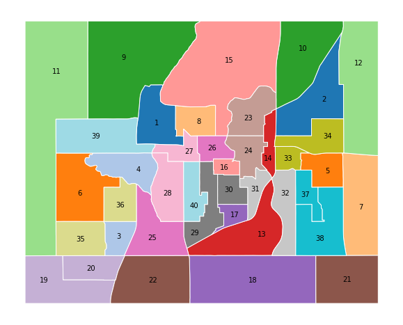
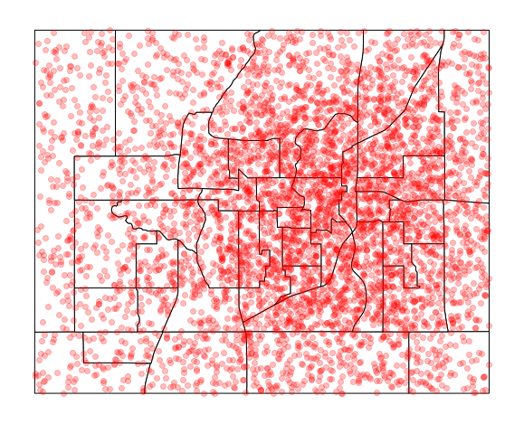
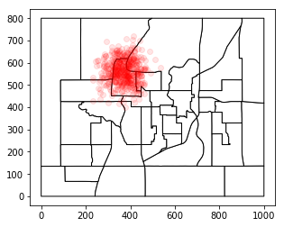
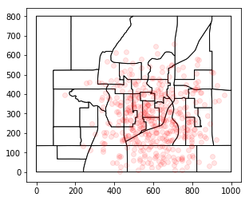
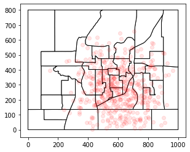
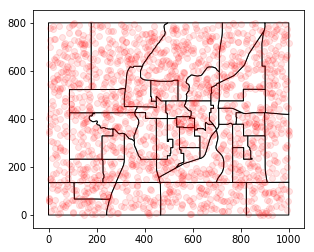
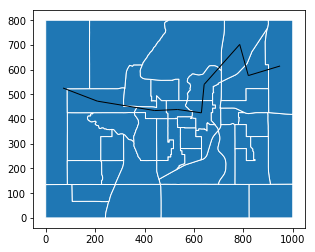
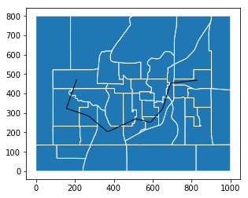

299: Exampville Simulated Data¶
[1]:
import os
import matplotlib.pyplot as plt
import numpy as np
import pandas as pd
import geopandas as gpd
import networkx as nx
import larch
larch.__version__
[1]:
'5.2.10'
Welcome to Exampville, the best simulated town in this here part of the internet!
Exampville is provided with Larch, and uses the kind of data that a transportation planner might have available when building a travel model. However, this data is entirely fictional.
This page walks through the creation of this synthetic data.
[2]:
np.random.seed(42)
[3]:
import larch.exampville
Travel Analysis Zones¶
We start with a shape file delineating some travel analysis zones. (Five bonus points if you can identify the real American city from which these tract shapes were derived.)
[5]:
taz_shape = gpd.read_file("zip://"+larch.exampville.files.shapefile)
ax = taz_shape.plot(edgecolor='w', figsize=(10,10), cmap='tab20')
ax.set_xticks([])
ax.set_yticks([])
ax.set_frame_on(False)
# Put Zone labels in the meatiest part of the zone shape...
for idx, row in taz_shape.iterrows():
shrink = row['geometry']
while True:
try:
shrink1 = shrink.buffer(-5)
if shrink1.area <= 0:
break
else:
shrink = shrink1
except:
break
ax.annotate(
s=row['TAZ'],
xy=tuple(shrink.representative_point().coords)[0],
horizontalalignment='center',
verticalalignment='center',
)

[6]:
nZones = len(taz_shape)
Households¶
[7]:
n_hh = 5000
[8]:
#### Group 1: In-town density
n_hh_1 = 3500
mean = [650, 400, 11]
cov = [
[44000, 5000, 0],
[ 5000, 44000, 0],
[ 0, 0, 1],
]
x, y, income = np.random.multivariate_normal(mean, cov, n_hh_1).T
# Assemble into a DataFrame
hh_locations = pd.DataFrame.from_dict({
'X':np.round(x,2),
'Y':np.round(y,2),
'INCOME':np.exp(income).astype(int),
})
# Convert to a GeoDataFrame
hh_locations = gpd.GeoDataFrame(
hh_locations,
geometry=gpd.points_from_xy(hh_locations.X, hh_locations.Y),
crs={},
)
# Attach HOMETAZ, and drop points outside the region.
hh_locations = gpd.sjoin(hh_locations, taz_shape[['TAZ','geometry']], how='inner', op='within')
[9]:
#### Group 2: Regional base population
n_hh_2 = n_hh - len(hh_locations) # Enough to get back to the desired total
x2 = np.random.random(n_hh_2)*1000
y2 = np.random.random(n_hh_2)*800
i2 = np.exp(np.random.random(n_hh_2)*3+8).astype(int)
# Assemble into a DataFrame
hh_locations2 = pd.DataFrame.from_dict({
'X':np.round(x2,2),
'Y':np.round(y2,2),
'INCOME':i2,
})
# Convert to a GeoDataFrame
hh_locations2 = gpd.GeoDataFrame(
hh_locations2,
geometry=gpd.points_from_xy(hh_locations2.X, hh_locations2.Y),
crs={},
)
# Attach HOMETAZ
hh_locations2 = gpd.sjoin(hh_locations2, taz_shape[['TAZ','geometry']], how='inner', op='within')
[10]:
#### Merge Groups
HH = pd.concat([hh_locations, hh_locations2])
# Clean up
HH = HH.reset_index(drop=True)
HH.rename({'TAZ':'HOMETAZ'}, axis=1, inplace=True)
HH.drop('index_right', axis=1, inplace=True)
# Add HH size and ID
HH['HHSIZE'] = np.floor(np.random.exponential(0.8, [n_hh, ]) + 1 + np.random.random([n_hh, ])).astype(int)
HH['HHID'] = HH.index + 50000
[11]:
HH.info()
<class 'geopandas.geodataframe.GeoDataFrame'>
RangeIndex: 5000 entries, 0 to 4999
Data columns (total 7 columns):
X 5000 non-null float64
Y 5000 non-null float64
INCOME 5000 non-null int64
geometry 5000 non-null object
HOMETAZ 5000 non-null int64
HHSIZE 5000 non-null int64
HHID 5000 non-null int64
dtypes: float64(2), int64(4), object(1)
memory usage: 273.5+ KB
[12]:
ax = taz_shape.plot(edgecolor='k', figsize=(10,10), color='w')
ax.set_xticks([])
ax.set_yticks([])
ax.set_frame_on(False)
HH.plot(ax=ax, color='red', alpha=0.25);

[14]:
HH.to_csv(larch.exampville.files.hh, index=False)
People¶
[15]:
HHsize = HH['HHSIZE']
n_PER = np.sum(HHsize)
PER = {}
PERidx = PER['idx'] = np.arange(n_PER, dtype=np.int64)
PERid = PER['PERSONID'] = np.asarray([60000 + i for i in PER['idx']])
PERhhid = PER['HHID'] = np.zeros(n_PER, dtype=np.int64)
PERhhidx = PER['HHIDX'] = np.zeros(n_PER, dtype=np.int64)
n2 = 0
for n1 in range(n_hh):
PER['HHID'][n2:(n2 + HHsize[n1])] = HH['HHID'][n1]
PER['HHIDX'][n2:(n2 + HHsize[n1])] = HH.index[n1]
n2 += HHsize[n1]
PERage = PER['AGE'] = (np.random.random(n_PER) * 80 + 5).astype(np.int64)
PERworks = PER['WORKS'] = ((np.random.random(n_PER) > 0.2) & (PERage > 16) & (PERage < 70)).astype(np.int64)
PER = pd.DataFrame.from_dict(PER)
PER.drop('idx', axis=1, inplace=True)
[16]:
## Add counts of tours
PER['N_WORK_TOURS'] = PERnworktours = np.random.choice([0, 1, 2, 3], size=[n_PER, ], replace=True, p=[0.1, 0.8, 0.07, 0.03]).astype(
np.int64) * PER['WORKS']
PER['N_OTHER_TOURS'] = PERnothertours = np.random.choice([0, 1, 2, 3], size=[n_PER, ], replace=True, p=[0.2, 0.5, 0.2, 0.1]).astype(np.int64)
PER['N_TOURS'] = PERntours = PERnworktours + PERnothertours
[17]:
PER.head()
[17]:
| PERSONID | HHID | HHIDX | AGE | WORKS | N_WORK_TOURS | N_OTHER_TOURS | N_TOURS | |
|---|---|---|---|---|---|---|---|---|
| 0 | 60000 | 50000 | 0 | 43 | 1 | 1 | 1 | 2 |
| 1 | 60001 | 50001 | 1 | 50 | 1 | 0 | 0 | 0 |
| 2 | 60002 | 50001 | 1 | 49 | 1 | 1 | 1 | 2 |
| 3 | 60003 | 50001 | 1 | 29 | 1 | 2 | 1 | 3 |
| 4 | 60004 | 50001 | 1 | 12 | 0 | 0 | 1 | 1 |
[18]:
PER.to_csv(larch.exampville.files.person, index=False)
Employment¶
[19]:
total_employment = PER['WORKS'].sum()
total_employment
[19]:
4835
[20]:
#### Group 1 Retail Locus
n_retail_jobs_1 = int(total_employment * 0.1)
mean = [370, 560,]
cov = [
[3000, 0],
[0, 3000],
]
x, y = np.random.multivariate_normal(mean, cov, n_retail_jobs_1).T
retail_locations_1 = pd.DataFrame.from_dict({
'X':x,
'Y':y,
})
retail_locations_1 = gpd.GeoDataFrame(
retail_locations_1,
geometry=gpd.points_from_xy(retail_locations_1.X, retail_locations_1.Y),
crs={},
)
retail_locations_1 = gpd.sjoin(retail_locations_1, taz_shape[['TAZ','geometry']], how='inner', op='within')
ax =taz_shape.plot(edgecolor='k', color='w')
retail_locations_1.plot(ax=ax, color='red', alpha=0.1);

[21]:
#### Group 2 Retail Background
n_retail_jobs_2 = int(total_employment * 0.1)
mean = [600, 250,]
cov = [
[22000, 0],
[0, 22000],
]
x, y = np.random.multivariate_normal(mean, cov, n_retail_jobs_2).T
retail_locations_2 = pd.DataFrame.from_dict({
'X':x,
'Y':y,
})
retail_locations_2 = gpd.GeoDataFrame(
retail_locations_2,
geometry=gpd.points_from_xy(retail_locations_2.X, retail_locations_2.Y),
crs={},
)
retail_locations_2 = gpd.sjoin(retail_locations_2, taz_shape[['TAZ','geometry']], how='inner', op='within')
ax =taz_shape.plot(edgecolor='k', color='w')
retail_locations_2.plot(ax=ax, color='red', alpha=0.1)
[21]:
<matplotlib.axes._subplots.AxesSubplot at 0x1a26bcf710>

[22]:
#### Group 3 Downtown Locus
n_other_jobs_1 = int(total_employment * 0.5)
mean = [300, 250,]
cov = [
[22000, 0],
[0, 22000],
]
x, y = np.random.multivariate_normal(mean, cov, n_other_jobs_1).T
other_locations_1 = pd.DataFrame.from_dict({
'X':x,
'Y':y,
})
other_locations_1 = gpd.GeoDataFrame(
other_locations_1,
geometry=gpd.points_from_xy(other_locations_1.X, other_locations_1.Y),
crs={},
)
other_locations_1 = gpd.sjoin(other_locations_1, taz_shape[['TAZ','geometry']], how='inner', op='within')
ax =taz_shape.plot(edgecolor='k', color='w')
other_locations_1.plot(ax=ax, color='red', alpha=0.1)
[22]:
<matplotlib.axes._subplots.AxesSubplot at 0x1a26963048>

[23]:
#### Group 4 Background
n_other_jobs_2 = total_employment - len(other_locations_1) - len(retail_locations_2) - len(retail_locations_1)
x2 = np.random.random(n_other_jobs_2)*1000
y2 = np.random.random(n_other_jobs_2)*800
other_locations_2 = pd.DataFrame.from_dict({
'X':x2,
'Y':y2,
})
other_locations_2 = gpd.GeoDataFrame(
other_locations_2,
geometry=gpd.points_from_xy(other_locations_2.X, other_locations_2.Y),
crs={},
)
other_locations_2 = gpd.sjoin(other_locations_2, taz_shape[['TAZ','geometry']], how='inner', op='within')
ax =taz_shape.plot(edgecolor='k', color='w')
other_locations_2.plot(ax=ax, color='red', alpha=0.1);

[24]:
## Merge all employment
retail_locations_1['JOBTYPE'] = 'retail'
retail_locations_2['JOBTYPE'] = 'retail'
other_locations_1['JOBTYPE'] = 'nonretail'
other_locations_2['JOBTYPE'] = 'nonretail'
job_location = pd.concat([retail_locations_1,retail_locations_2,other_locations_1,other_locations_2])
job_location = job_location.reset_index(drop=True)
job_location['JOBTYPE'] = job_location['JOBTYPE'].astype('category')
ax =taz_shape.plot(edgecolor='k', color='w')
job_location.plot(ax=ax, color='red', alpha=0.1);

[25]:
taz_employment = job_location.groupby(['TAZ','JOBTYPE']).size().unstack().fillna(0).astype(int)
taz_employment.rename({'retail':'RETAIL_EMP', 'nonretail':'NONRETAIL_EMP'}, axis=1, inplace=True)
[26]:
taz_employment['TOTAL_EMP'] = taz_employment['NONRETAIL_EMP'] + taz_employment['RETAIL_EMP']
[27]:
taz_employment.columns.name = None
[28]:
taz_employment.head()
[28]:
| NONRETAIL_EMP | RETAIL_EMP | TOTAL_EMP | |
|---|---|---|---|
| TAZ | |||
| 1 | 88 | 236 | 324 |
| 2 | 45 | 6 | 51 |
| 3 | 118 | 1 | 119 |
| 4 | 183 | 7 | 190 |
| 5 | 24 | 8 | 32 |
[29]:
# Save
taz_employment.to_csv(larch.exampville.files.employment)
[ ]:
Network Graph¶
[30]:
from itertools import tee
def pairwise(iterable):
"s -> (s0,s1), (s1,s2), (s2, s3), ..."
a, b = tee(iterable)
next(b, None)
return zip(a, b)
[31]:
highway_route = [12,2,10,23,24,26,27,39,11]
transit_line = [39,6,36,25,29,17,31,14,34]
[32]:
speed_road = 3 # minutes per mile
speed_highway = 1 # minutes per mile
speed_train = 1.2 # minutes per mile
speed_walk = 20 # minutes per mile
speed_bike = 5 # minutes per mile
[33]:
g = nx.DiGraph()
for index, zone in taz_shape.iterrows():
# get 'not disjoint' countries
neighbors = taz_shape[~taz_shape.geometry.disjoint(zone.geometry)].TAZ.tolist()
neighborc = taz_shape[~taz_shape.geometry.disjoint(zone.geometry)].geometry.centroid.tolist()
# add names of neighbors as NEIGHBORS value
for name, cent in zip(neighbors,neighborc):
if zone.TAZ != name:
otaz, dtaz = int(zone.TAZ), int(name)
distance = (zone.geometry.centroid.distance(cent)) / 100
if otaz in highway_route and dtaz in highway_route:
cartime = distance * speed_highway
else:
cartime = distance * speed_road
if otaz in [25,36,3]:
cartime += 3 # congestion
if dtaz in [25,36,3]:
cartime += 5 # congestion
if otaz in transit_line and dtaz in transit_line:
transit_ivtt = distance * speed_train
transit_ovtt = 999999
transit_time = transit_ivtt
else:
transit_ivtt = 999999
transit_ovtt = distance * speed_walk
transit_time = transit_ovtt
g.add_edge(
otaz, dtaz,
distance=distance, cartime=cartime,
transit_ovtt=transit_ovtt,
transit_ivtt=transit_ivtt,
transit_time=transit_time,
)
[34]:
taz_shape.index = taz_shape.TAZ
[35]:
centroids = taz_shape.centroid
[36]:
## Highway Map
ax = taz_shape.plot(edgecolor='w')
nx.draw_networkx_edges(
g,
pos={i:p.coords[0] for i,p in centroids.iteritems()},
ax=ax,
arrows=False,
edgelist = list(pairwise(highway_route))
);
/Users/jpn/anaconda/envs/greenhouse/lib/python3.7/site-packages/networkx/drawing/nx_pylab.py:611: MatplotlibDeprecationWarning: isinstance(..., numbers.Number)
if cb.is_numlike(alpha):

[37]:
## Transit Map
ax = taz_shape.plot(edgecolor='w')
nx.draw_networkx_edges(
g,
pos={i:p.coords[0] for i,p in centroids.iteritems()},
ax=ax,
arrows=False,
edgelist = list(pairwise(transit_line))
);
/Users/jpn/anaconda/envs/greenhouse/lib/python3.7/site-packages/networkx/drawing/nx_pylab.py:611: MatplotlibDeprecationWarning: isinstance(..., numbers.Number)
if cb.is_numlike(alpha):

[38]:
# Skim walk times
WALKDIST = np.zeros([40,40])
for otaz in range(1,41):
shortpaths = nx.shortest_path_length(g, source=otaz, weight='distance')
for dtaz,t in shortpaths.items():
WALKDIST[otaz-1,dtaz-1] = t
# Intrazonal
WALKDIST[otaz-1,otaz-1] = np.sqrt(taz_shape.loc[otaz,'geometry'].area)/100
print(WALKDIST)
[[1.26008879 5.33674896 4.58318093 ... 6.18954756 1.69554975 2.37320583]
[5.33674896 1.58559083 7.10162147 ... 3.58697088 6.58003239 4.68712856]
[4.58318093 7.10162147 0.84878748 ... 6.03594579 3.16473549 2.58607677]
...
[6.18954756 3.58697088 6.03594579 ... 1.47478351 7.36821732 4.27530036]
[1.69554975 6.58003239 3.16473549 ... 7.36821732 1.52806696 3.1778055 ]
[2.37320583 4.68712856 2.58607677 ... 4.27530036 3.1778055 0.93934102]]
[ ]:
[39]:
# Skim car times
CARTIME = np.zeros([40,40])
CARDIST = np.zeros([40,40])
for otaz in range(1,41):
shortpaths = nx.shortest_path(g, source=otaz, weight='cartime')
for dtaz,pth in shortpaths.items():
cartime, cardist = 0,0
for i,j in pairwise(pth):
cartime += g.edges[i,j]['cartime']
cardist += g.edges[i,j]['distance']
CARTIME[otaz-1,dtaz-1] = cartime
CARDIST[otaz-1,dtaz-1] = cardist
# Intrazonal
intrazonal_dist = np.sqrt(taz_shape.loc[otaz,'geometry'].area)/100
CARTIME[otaz-1,otaz-1] = intrazonal_dist * speed_road
CARDIST[otaz-1,otaz-1] = intrazonal_dist
if otaz in [25,36,3]:
CARTIME[otaz-1,otaz-1] += 5 # congestion
print(CARTIME)
[[ 3.78026636 7.55074623 20.03817767 ... 14.84435807 5.08664924
7.1196175 ]
[ 7.55074623 4.75677248 21.53156082 ... 10.76091265 6.58003239
7.46190167]
[18.03817767 19.53156082 7.54636244 ... 26.82517266 12.95152843
18.69703682]
...
[14.84435807 10.76091265 28.82517266 ... 4.42435054 13.87364423
12.82590109]
[ 5.08664924 6.58003239 14.95152843 ... 13.87364423 4.58420087
6.14890366]
[ 7.1196175 7.46190167 20.69703682 ... 12.82590109 6.14890366
2.81802305]]
[40]:
## Skim Transit times
from itertools import tee
def pairwise(iterable):
"s -> (s0,s1), (s1,s2), (s2, s3), ..."
a, b = tee(iterable)
next(b, None)
return zip(a, b)
TRANSIT_IVTT = np.zeros([40,40])
TRANSIT_OVTT = np.zeros([40,40])
for otaz in range(1,41):
shortpaths = nx.shortest_path(g, source=otaz, weight='transit_time')
for dtaz,pth in shortpaths.items():
ivtt, ovtt = 0,0
for i,j in pairwise(pth):
if g.edges[i,j]['transit_ivtt'] < 999999:
ivtt += g.edges[i,j]['transit_ivtt']
else:
ovtt += g.edges[i,j]['transit_ovtt']
if ovtt == 0:
ovtt = np.sqrt(taz_shape.loc[otaz,'geometry'].area)/150 + np.sqrt(taz_shape.loc[dtaz,'geometry'].area)/150
TRANSIT_IVTT[otaz-1,dtaz-1] = ivtt
TRANSIT_OVTT[otaz-1,dtaz-1] = ovtt
[41]:
print(TRANSIT_IVTT[:5,:5])
[[ 0. 12.16681923 3.34322095 0. 12.16681923]
[12.16681923 0. 7.28835487 8.82359828 0. ]
[ 3.34322095 7.28835487 0. 0. 7.28835487]
[ 0. 8.82359828 0. 0. 8.82359828]
[12.16681923 0. 7.28835487 8.82359828 0. ]]
[42]:
print(TRANSIT_IVTT[5:10,5:10])
[[ 0. 10.27128369 4.87262088 1.89553554 10.27128369]
[10.27128369 0. 1.65255376 12.16681923 0. ]
[ 4.87262088 1.65255376 0. 0. 0. ]
[ 1.89553554 12.16681923 0. 0. 0. ]
[10.27128369 0. 0. 0. 0. ]]
[43]:
print(TRANSIT_OVTT[:5,:5])
[[ 1.68011838 55.40770608 53.31126782 54.30474188 51.92986575]
[55.40770608 2.1141211 42.40834339 41.86677092 39.51558199]
[53.31126782 42.40834339 1.13171664 39.77033266 38.93050306]
[54.30474188 41.86677092 39.77033266 1.59494151 38.38893059]
[51.92986575 39.51558199 38.93050306 38.38893059 1.33312576]]
[44]:
nx.shortest_path(g, source=30, weight='transit_time')[17]
[44]:
[30, 17]
[45]:
TRANSIT_OVTT[30-1,17-1]
[45]:
13.623549779792938
[46]:
print(TRANSIT_OVTT[5:10,5:10])
[[ 2.13185101 44.79634199 52.86833727 45.94660431 47.64017297]
[44.79634199 2.23727869 96.67959495 90.7429463 92.43651496]
[52.86833727 96.67959495 1.28229674 57.83865222 79.11952302]
[45.94660431 90.7429463 57.83865222 3.35766701 97.40276959]
[47.64017297 92.43651496 79.11952302 97.40276959 2.30316209]]
[48]:
if os.path.exists(larch.exampville.files.skims):
os.remove(larch.exampville.files.skims)
[49]:
## Assemble Skims into an OMX File
skims_omx = larch.OMX(larch.exampville.files.skims, mode='w')
[50]:
skims_omx.add_matrix('TRANSIT_IVTT', TRANSIT_IVTT)
skims_omx.add_matrix('TRANSIT_OVTT', TRANSIT_OVTT)
skims_omx.add_matrix('TRANSIT_FARE', (TRANSIT_IVTT>0)*2.50)
skims_omx.add_matrix('WALK_DIST', WALKDIST)
skims_omx.add_matrix('WALK_TIME', WALKDIST * speed_walk)
skims_omx.add_matrix('BIKE_TIME', WALKDIST * speed_bike)
skims_omx.add_matrix('AUTO_TIME', CARTIME)
skims_omx.add_matrix('AUTO_COST', CARDIST * 0.35)
skims_omx.add_matrix('AUTO_DIST', CARDIST);
[52]:
skims_omx.add_lookup('TAZ_ID', np.arange(nZones)+1);
[52]:
/lookup/TAZ_ID (CArray(40,), shuffle, zlib(1)) ''
atom := Int64Atom(shape=(), dflt=0)
maindim := 0
flavor := 'numpy'
byteorder := 'little'
chunkshape := (8192,)
[53]:
skims_omx.close()
[55]:
skims_omx = larch.OMX(larch.exampville.files.skims, mode='r')
Tours¶
[56]:
# Tour Modes
DA = 1
SR = 2
Walk = 3
Bike = 4
Transit = 5
[57]:
## Tours
n_TOUR = PERntours.sum()
TOURid = np.arange(n_TOUR, dtype=np.int64)
TOURper = np.zeros(n_TOUR, dtype=np.int64)
TOURperidx = np.zeros(n_TOUR, dtype=np.int64)
TOURhh = np.zeros(n_TOUR, dtype=np.int64)
TOURhhidx = np.zeros(n_TOUR, dtype=np.int64)
TOURdtaz = np.zeros(n_TOUR, dtype=np.int64)
TOURmode = np.zeros(n_TOUR, dtype=np.int64)
TOURpurpose = np.zeros(n_TOUR, dtype=np.int64)
# Work tours, then other tours
n2 = 0
for n1 in range(n_PER):
TOURper[n2:(n2 + PERntours[n1])] = PERid[n1]
TOURperidx[n2:(n2 + PERntours[n1])] = PERidx[n1]
TOURhh[n2:(n2 + PERntours[n1])] = PERhhid[n1]
TOURhhidx[n2:(n2 + PERntours[n1])] = PERhhidx[n1]
TOURpurpose[n2:(n2 + PERnworktours[n1])] = 1
TOURpurpose[(n2 + PERnworktours[n1]):(n2 + PERntours[n1])] = 2
n2 += PERntours[n1]
[58]:
#### Utility by mode to various destinations
nameModes = ['DA', 'SR', 'Walk', 'Bike', 'Transit']
mDA = 0
mSR = 1
mWA = 2
mBI = 3
mTR = 4
nModes = len(nameModes)
nModeNests = 3
paramCOST = -0.312
paramTIME = -0.123
paramNMTIME = -0.246
paramDIST = -0.00357
paramLNDIST = -0.00642
paramMUcar = 0.5
paramMUnon = 0.75
paramMUmot = 0.8
paramMUtop = 1.0
[59]:
zone_retail = taz_employment.RETAIL_EMP
zone_nonretail = taz_employment.NONRETAIL_EMP
[60]:
Util = np.zeros([n_TOUR, nZones, nModes])
for n in range(n_TOUR):
# Mode
otazi = HH.HOMETAZ[TOURhhidx[n]] - 1
Util[n, :, mDA] += (
+ skims_omx.AUTO_TIME[otazi, :] * paramTIME
+ skims_omx.AUTO_COST[otazi, :] * paramCOST
)
if HH.INCOME[TOURhhidx[n]] >= 75000:
Util[n, :, mDA] += 1.0
Util[n, :, mTR] -= 0.5
Util[n, :, mSR] += (
+ skims_omx.AUTO_TIME[otazi, :] * paramTIME
- 1.0
+ skims_omx.AUTO_COST[otazi, :] * paramCOST * 0.5
)
Util[n, :, mWA] += 3.0 + skims_omx.WALK_TIME[otazi, :] * paramNMTIME
Util[n, :, mBI] += -2.25 + skims_omx.BIKE_TIME[otazi, :] * paramNMTIME
Util[n, :, mTR] += (
+ 1.5
+ skims_omx.TRANSIT_IVTT[otazi, :] * paramTIME
+ skims_omx.TRANSIT_OVTT[otazi, :] * paramTIME * 2.2
+ skims_omx.TRANSIT_FARE[otazi, :] * paramCOST
)
# Destination
Util[n, :, :] += skims_omx.AUTO_DIST[:][otazi, :, None] * paramDIST + np.log1p(skims_omx.AUTO_DIST[:][otazi, :, None]) * paramLNDIST
if HH.INCOME[TOURhhidx[n]] <= 50000:
Util[n, :, :] += 0.75 * np.log(zone_retail * 2.71828 + zone_nonretail)[:, None]
else:
Util[n, :, :] += 0.75 * np.log(zone_retail + zone_nonretail * 2.71828)[:, None]
# flog('Util[n,:,:] ...')
# flog('{}',Util[n,:,:])
# Unavails
if PERage[TOURperidx[n]] < 16:
Util[n, :, mDA] = -np.inf
Util[n, skims_omx.TRANSIT_FARE[otazi, :] <= 0, mTR] = -np.inf
Util[n, skims_omx.WALK_TIME[otazi, :] >= 60, mWA] = -np.inf
Util[n, skims_omx.BIKE_TIME[otazi, :] >= 60, mBI] = -np.inf
[61]:
from numpy import log, exp
[62]:
CPr_car = np.zeros([n_TOUR, nZones, 2]) # [DA,SR]
CPr_non = np.zeros([n_TOUR, nZones, 2]) # [WA,BI]
CPr_mot = np.zeros([n_TOUR, nZones, 2]) # [TR,Car]
CPr_top = np.zeros([n_TOUR, nZones, 2]) # [Non,Mot]
NLS_car = np.zeros([n_TOUR, nZones, ])
NLS_non = np.zeros([n_TOUR, nZones, ])
NLS_mot = np.zeros([n_TOUR, nZones, ])
MLS_top = np.zeros([n_TOUR, nZones, ]) # Mode choice logsum
DLS_top = np.zeros([n_TOUR, ]) # Dest choice logsum
Pr_modes = np.zeros([n_TOUR, nZones, nModes])
Pr_dest = np.zeros([n_TOUR, nZones])
with np.errstate(divide='ignore', invalid='ignore'):
for n in range(n_TOUR):
NLS_car[n, :] = paramMUcar * log(np.exp(Util[n, :, mDA] / paramMUcar) + exp(Util[n, :, mSR] / paramMUcar))
NLS_non[n, :] = paramMUnon * log(np.exp(Util[n, :, mWA] / paramMUnon) + exp(Util[n, :, mBI] / paramMUnon))
NLS_mot[n, :] = paramMUmot * log(np.exp(NLS_car[n, :] / paramMUmot) + exp(Util[n, :, mTR] / paramMUmot))
MLS_top[n, :] = log(exp(NLS_non[n, :]) + exp(NLS_mot[n, :]))
DLS_top[n] = log(np.sum(exp(MLS_top[n, :])))
Pr_dest[n, :] = exp(MLS_top[n, :] - DLS_top[n])
CPr_top[n, :, 0] = exp((NLS_non[n, :] - MLS_top[n, :]) / paramMUtop)
CPr_top[n, :, 1] = exp((NLS_mot[n, :] - MLS_top[n, :]) / paramMUtop)
CPr_mot[n, :, 0] = exp((Util[n, :, mTR] - NLS_mot[n, :]) / paramMUmot)
CPr_mot[n, :, 1] = exp((NLS_car[n, :] - NLS_mot[n, :]) / paramMUmot)
CPr_non[n, :, 0] = exp((Util[n, :, mWA] - NLS_non[n, :]) / paramMUnon)
CPr_non[n, :, 1] = exp((Util[n, :, mBI] - NLS_non[n, :]) / paramMUnon)
CPr_car[n, :, 0] = exp((Util[n, :, mDA] - NLS_car[n, :]) / paramMUcar)
CPr_car[n, :, 1] = exp((Util[n, :, mSR] - NLS_car[n, :]) / paramMUcar)
Pr_modes[n, :, mTR] = CPr_mot[n, :, 0] * CPr_top[n, :, 1] * Pr_dest[n, :]
Pr_modes[n, :, mWA] = CPr_non[n, :, 0] * CPr_top[n, :, 0] * Pr_dest[n, :]
Pr_modes[n, :, mBI] = CPr_non[n, :, 1] * CPr_top[n, :, 0] * Pr_dest[n, :]
Pr_modes[n, :, mDA] = CPr_car[n, :, 0] * CPr_mot[n, :, 1] * CPr_top[n, :, 1] * Pr_dest[n, :]
Pr_modes[n, :, mSR] = CPr_car[n, :, 1] * CPr_mot[n, :, 1] * CPr_top[n, :, 1] * Pr_dest[n, :]
Pr_modes[np.isnan(Pr_modes)] = 0
[63]:
## Choices
for n in range(n_TOUR):
try:
ch = np.random.choice(nModes * nZones, replace=True, p=Pr_modes[n, :, :].ravel())
except:
print("total prob = {}", Pr_modes[n, :, :].sum())
raise
dtazi = ch // nModes
modei = ch - (dtazi * nModes)
TOURdtaz[n] = dtazi + 1
TOURmode[n] = modei + 1
[64]:
f_tour = pd.DataFrame.from_dict(
dict([
('TOURID', TOURid),
('HHID', TOURhh),
('PERSONID', TOURper),
('DTAZ', TOURdtaz),
('TOURMODE', TOURmode),
('TOURPURP', TOURpurpose),
])
)
# f_tour_filename = os.path.join(directory, 'exampville_tours.csv')
# f_tour.to_csv(f_tour_filename)
[65]:
f_tour.set_index('TOURID', inplace=True)
[67]:
f_tour.to_csv(larch.exampville.files.tour)
[68]:
DA = 1
SR = 2
Walk = 3
Bike = 4
Transit = 5
[69]:
dfs = larch.DataFrames(
co=f_tour,
alt_codes=[DA,SR,Walk,Bike,Transit],
alt_names=['DA','SR','Walk','Bike','Transit'],
ch_name='TOURMODE',
)
[70]:
dfs.data_ch
[70]:
| 1 | 2 | 3 | 4 | 5 | |
|---|---|---|---|---|---|
| TOURID | |||||
| 0 | 1.0 | 0.0 | 0.0 | 0.0 | 0.0 |
| 1 | 1.0 | 0.0 | 0.0 | 0.0 | 0.0 |
| 2 | 1.0 | 0.0 | 0.0 | 0.0 | 0.0 |
| 3 | 1.0 | 0.0 | 0.0 | 0.0 | 0.0 |
| 4 | 1.0 | 0.0 | 0.0 | 0.0 | 0.0 |
| 5 | 1.0 | 0.0 | 0.0 | 0.0 | 0.0 |
| 6 | 1.0 | 0.0 | 0.0 | 0.0 | 0.0 |
| 7 | 0.0 | 1.0 | 0.0 | 0.0 | 0.0 |
| 8 | 1.0 | 0.0 | 0.0 | 0.0 | 0.0 |
| 9 | 1.0 | 0.0 | 0.0 | 0.0 | 0.0 |
| 10 | 1.0 | 0.0 | 0.0 | 0.0 | 0.0 |
| 11 | 1.0 | 0.0 | 0.0 | 0.0 | 0.0 |
| 12 | 1.0 | 0.0 | 0.0 | 0.0 | 0.0 |
| 13 | 1.0 | 0.0 | 0.0 | 0.0 | 0.0 |
| 14 | 1.0 | 0.0 | 0.0 | 0.0 | 0.0 |
| 15 | 0.0 | 0.0 | 1.0 | 0.0 | 0.0 |
| 16 | 0.0 | 0.0 | 1.0 | 0.0 | 0.0 |
| 17 | 1.0 | 0.0 | 0.0 | 0.0 | 0.0 |
| 18 | 1.0 | 0.0 | 0.0 | 0.0 | 0.0 |
| 19 | 1.0 | 0.0 | 0.0 | 0.0 | 0.0 |
| 20 | 1.0 | 0.0 | 0.0 | 0.0 | 0.0 |
| 21 | 1.0 | 0.0 | 0.0 | 0.0 | 0.0 |
| 22 | 0.0 | 0.0 | 0.0 | 1.0 | 0.0 |
| 23 | 1.0 | 0.0 | 0.0 | 0.0 | 0.0 |
| 24 | 1.0 | 0.0 | 0.0 | 0.0 | 0.0 |
| 25 | 1.0 | 0.0 | 0.0 | 0.0 | 0.0 |
| 26 | 1.0 | 0.0 | 0.0 | 0.0 | 0.0 |
| 27 | 1.0 | 0.0 | 0.0 | 0.0 | 0.0 |
| 28 | 1.0 | 0.0 | 0.0 | 0.0 | 0.0 |
| 29 | 1.0 | 0.0 | 0.0 | 0.0 | 0.0 |
| ... | ... | ... | ... | ... | ... |
| 15904 | 0.0 | 0.0 | 1.0 | 0.0 | 0.0 |
| 15905 | 0.0 | 1.0 | 0.0 | 0.0 | 0.0 |
| 15906 | 0.0 | 1.0 | 0.0 | 0.0 | 0.0 |
| 15907 | 1.0 | 0.0 | 0.0 | 0.0 | 0.0 |
| 15908 | 1.0 | 0.0 | 0.0 | 0.0 | 0.0 |
| 15909 | 0.0 | 1.0 | 0.0 | 0.0 | 0.0 |
| 15910 | 1.0 | 0.0 | 0.0 | 0.0 | 0.0 |
| 15911 | 1.0 | 0.0 | 0.0 | 0.0 | 0.0 |
| 15912 | 1.0 | 0.0 | 0.0 | 0.0 | 0.0 |
| 15913 | 1.0 | 0.0 | 0.0 | 0.0 | 0.0 |
| 15914 | 1.0 | 0.0 | 0.0 | 0.0 | 0.0 |
| 15915 | 0.0 | 1.0 | 0.0 | 0.0 | 0.0 |
| 15916 | 0.0 | 1.0 | 0.0 | 0.0 | 0.0 |
| 15917 | 0.0 | 1.0 | 0.0 | 0.0 | 0.0 |
| 15918 | 1.0 | 0.0 | 0.0 | 0.0 | 0.0 |
| 15919 | 1.0 | 0.0 | 0.0 | 0.0 | 0.0 |
| 15920 | 1.0 | 0.0 | 0.0 | 0.0 | 0.0 |
| 15921 | 1.0 | 0.0 | 0.0 | 0.0 | 0.0 |
| 15922 | 0.0 | 1.0 | 0.0 | 0.0 | 0.0 |
| 15923 | 1.0 | 0.0 | 0.0 | 0.0 | 0.0 |
| 15924 | 0.0 | 0.0 | 0.0 | 0.0 | 1.0 |
| 15925 | 0.0 | 0.0 | 0.0 | 0.0 | 1.0 |
| 15926 | 1.0 | 0.0 | 0.0 | 0.0 | 0.0 |
| 15927 | 1.0 | 0.0 | 0.0 | 0.0 | 0.0 |
| 15928 | 1.0 | 0.0 | 0.0 | 0.0 | 0.0 |
| 15929 | 1.0 | 0.0 | 0.0 | 0.0 | 0.0 |
| 15930 | 0.0 | 0.0 | 0.0 | 0.0 | 1.0 |
| 15931 | 1.0 | 0.0 | 0.0 | 0.0 | 0.0 |
| 15932 | 0.0 | 0.0 | 1.0 | 0.0 | 0.0 |
| 15933 | 1.0 | 0.0 | 0.0 | 0.0 | 0.0 |
15934 rows × 5 columns
[71]:
dfs.choice_avail_summary()
[71]:
| name | chosen | available | chosen but not available | |
|---|---|---|---|---|
| 1 | DA | 11495.0 | None | 11495.0 |
| 2 | SR | 2954.0 | None | 2954.0 |
| 3 | Walk | 469.0 | None | 469.0 |
| 4 | Bike | 180.0 | None | 180.0 |
| 5 | Transit | 836.0 | None | 836.0 |
| < Total All Alternatives > | 15934.0 | 15934.0 |
[ ]:
[ ]: